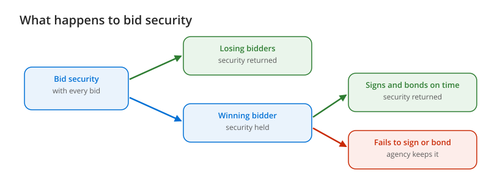

Bid security: bid bonds and other forms
In one sentence: bid security guarantees the agency that if you win, you'll sign the contract and deliver the bonds and insurance; if you don't, the agency keeps the security.

Forms of bid security
- Bid bond from an admitted surety, the usual choice.
- Cashier's check or certified check payable to the agency.
- Cash, accepted by some agencies.
The amount is set in the bid documents and is usually at least 10% of the total bid. Some agencies ask for 10% of the base bid plus alternates; read the instruction.
After bid opening
- Losing bidders get their security back, usually after award or contract signature.
- The winning bidder's security is held until it signs the contract and delivers the performance bond, payment bond and insurance on time.
- If the winner fails to sign or bond within the time allowed, the agency can keep the security and award to the next bidder.
Mistakes in the bid
A bidder that made a clerical mistake can ask to be relieved of its bid without losing the security, but the conditions are strict. Under Public Contract Code 5103 it must give written notice within five working days after opening, describing how the mistake happened, and the mistake must be in filling out the bid, not an error in judgment. See Bid opening, award and protests.
PM notes
When the bid total changes in the last hour, check that the bond amount still covers 10% of the new total, or that the bond is written as "10% of the amount bid".
Common mistakes / what agencies actually check
- Bond for a fixed amount that falls short after the bid total rises.
- Bond from a surety not admitted in California.
- Forgetting the power of attorney that shows the surety agent's authority.